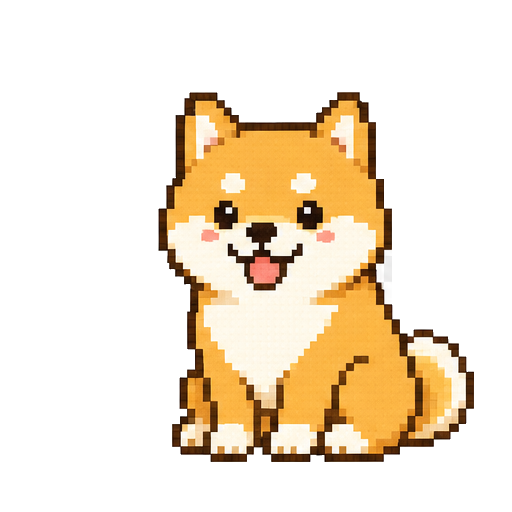

✨
coming_soon_01
your project here
Xiayu “Summer” Chen · personal site
click anywhere · or press Enter
Xiayu "Summer" Chen — Assistant Professor, School of Social Work, University of Central Florida. A trained oncology social worker working at the intersection of gerontology, health disparities, and technology for social good.
My research centers on digital equity for diverse aging populations: technology acceptance among older adults, culturally responsive digital interventions, and AI-based conversational agents that promote well-being and social inclusion for marginalized older adults.
GSA · AGESW · SSWR
// AI-driven design experiments. More dropping soon. 🐕
your project here
title · image · link
a build / prototype

woof! chat?